3.3 Baumdiagramme geschickt nutzen
3.3.1 Verkürzte Baumdiagramme
Du erinnerst dich sicher noch an das Quiz und die Aufgaben mit Nina und Emil, die jeweils in jedem siebten Ü-Ei stecken. Im Fall von Nina wurden nur zwei Eier erworben und man sollte die Wahrscheinlichkeit berechnen, dass man leider leer ausgeht. In diesem Fall ist ein Bäumchen noch schnell skizziert:
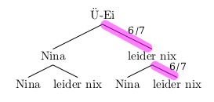
Die Wahrscheinlichkeit, dass in beiden Fällen leider keine Nina im Ü-Ei ist, ergibt sich also mit Hilfe der Produktregel:
\[P(keine\;Nina)= \frac{6}{7} \cdot \frac{6}{7} = (\frac{6}{7})^2 = \frac{36}{49} \approx 73,5\%\]
Anders sieht es bei der Emil Aufgabe aus. Hier werden sieben Eier gekauft. Möchte man nun noch den ganzen Baum zeichnen, muss man entweder sehr klein schreiben oder ein großes Blatt zur Hand nehmen… Hier lohnt es sich den Baum zu verkürzen und nur den Pfad zu skizzieren, der zum Ereignis Leerausgehen gehört.
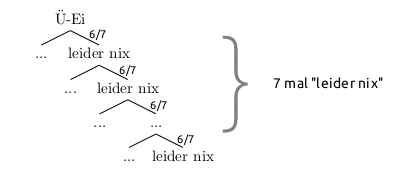
Auch wenn der Pfad hier nur skizziert wurde und man sich den Rest des Baumes gespart hat, erhält man die Wahrscheinlichkeit dafür, leer auszugehen, natürlich genau wie im Fall der Nilpferddame Nina mit Hilfe der Produktregel:
\[P(kein\;Emil)= \underbrace{\frac{6}{7} \cdot \frac{6}{7} \cdot \dots \cdot \frac{6}{7}}_{7\;mal} = (\frac{6}{7})^7 = \frac{279936}{823543} \approx 34\%\]
Beachte:
Beim Zeichnen von Baumdiagrammen kann man sich oft Arbeit sparen, indem man
nur die Pfade des Baumdiagramms zeichnet, die zu dem Ereignis gehören, das einen interessiert und/oder
mehrere Ergebnisse zu einem Pfad in einem Baumdiagramm zusammenfasst.
Beispiel 1
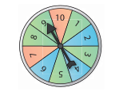
Beim Glücksrad auf dem Straßenfest gewinnt man einen Blumentopf, wenn man bei zweimaligem Drehen zweimal eine 10 erhält. Samuel möchte mit einem Baumdiagramm die Wahrscheinlichkeit für einen Blumentopf ermitteln und beginnt, zehn Pfade zu zeichenen.
Gib ihm einen Tipp, wie er stattdessen vorgehen soll und ermittle die Wahrscheinlichkeit einen Blumentopf zu gewinnen.
Da man nur die Fälle 10 oder nicht 10 unterscheiden muss, kann Samuel die möglichen Ergebnisse 1 bis 9 zum Ereignis nicht 10 zusammenfassen. Damit erhält er folgenden verkürzten Baum:
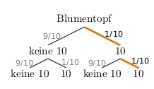
Er kann den Baum sogar noch kürzer darstellen, schließlich interessiert er sich nur für das Ergebnis zweimal 10:
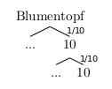
Mit Hilfe der Produktregel erhält man in jedem Fall die Wahrscheinlichkeit für einen Blumentopf:
\(P(Blumentopf)=\frac{1}{10} \cdot \frac{1}{10} = \frac{1}{100} = 1\%\)
Beispiel 2
Ermittle die Wahrscheinlichkeit, bei dreimaligem Würfeln mit einem normalen Spielwürfel genau zwei Sechsen zu erhalten.
Es ist nicht nötig für alle Ergebnisse 1 bis 6 im Baumdiagramm Pfade zu zeichnen, da man sich nur für das Ergebnis 6 interessiert. Deshalb genügt es, die beiden Fälle 6 und keine 6 zu unterscheiden.
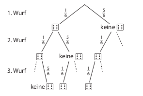
Zum Ergebnis genau zweimal Sechs gehören die drei zusammengesetzten Ergebnisse \((6,\;6,\;keine\;6)\), \((6,\;keine\;6,\;6)\) und \((keine\;6,\;6,\;6)\).
Es reicht aus, nur die zu diesen drei Ergebnissen die Pfade zu zeichnen und ihre Wahrscheinlichkeiten zu bestimmen. Die Wahrscheinlichkeiten dieser drei Pfade muss man dann noch addieren, um die Wahrscheinlichkeit für genau zweimal Sechs zu erhalten.
\[\begin{align} P(genau\;zweimal\;6) &= P(6,\;6,\;keine\;6) + P(6,\;keine\;6,\;6) + P(keine\;6,\;6,\;6) =\\ {}\\ &= \frac{1}{6} \cdot \frac{1}{6} \cdot \frac{5}{6} + \frac{1}{6} \cdot \frac{5}{6} \cdot \frac{1}{6} + \frac{5}{6} \cdot \frac{1}{6} \cdot \frac{1}{6} = \frac{15}{216} \approx 6,9\% \end{align}\]
Aufgabe 1
Luca würfelt viermal hintereinander. Bestimme die Wahrscheinlichkeit, dass er vier Sechsen würfelt. Zeichne dazu eine verkürztes Baumdiagramm.
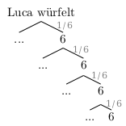
\(P(viermal\;6)=(\frac{1}{6})^4 \approx 0,00077\; (\approx 0,077\%)\)
Aufgabe 2
Afra soll fünf gegebene Flüsse der Länge nach ordnen, wobei sie mit dem längsten Fluss beginnen soll. Da Afra nur von Rhein und Donau überhaupt mal irgendetwas gehört hat und diese beiden Flüsse leider nicht dabei sind, ordnet sie die Flüsse rein zufällig. Ermittle, mit welcher Wahrscheinlichkeit sie die richtige Reihenfolge erhält.
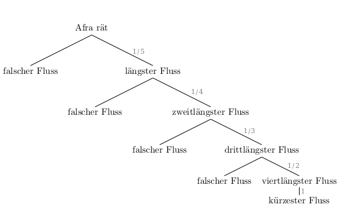
\(P(richtige\;Reihenfolge)=\frac{1}{5}\cdot\frac{1}{4}\cdot\frac{1}{3}\cdot\frac{1}{2}\cdot1 = \frac{1}{120} \approx 0,008333333 \; (\approx 0,83\%)\)
Aufgabe 3
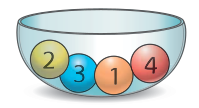
In einer Schale sind vier Kugeln versteckt, die mit den Ziffern von 1 bis 4 beschriftet sind. Elise, Lore und Finn sollen die Wahrscheinlichkeit berechnen, erst eine gerade und dann eine ungerade Zahl zu ziehen, wenn blind (also zufällig) und mit Zurücklegen gezogen wird.
- Beurteile die Lösungen von Elise und Finn.
Elises Lösung:
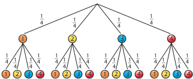
\[\begin{align} P(gerade,\;ungerade) &= P(2,\;1) + P(2,\;3) + P(4,\;1) + P(4,\;3) =\\ {}\\ &=\frac{1}{4} \cdot \frac{1}{4} + \frac{1}{4} \cdot \frac{1}{4} +\frac{1}{4} \cdot \frac{1}{4} + \frac{1}{4} \cdot \frac{1}{4} =\\ {}\\ & = 4\cdot \frac{1}{16} = \frac{1}{4} = 25\% \end{align}\]
Finns Lösung:
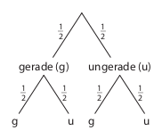
\[P(gerade,\;ungerade)=\frac{1}{2} \cdot \frac{1}{2} = \frac{1}{4} = 25\%\]
Beide Lösungen sind richtig. Finns Lösung ist aber deutlich effizienter, da er sich auf die für die Fragestellung relevanten Informationen konzentriert.
Während man Elises Lösung detailliert alle zusammengesetzten Ergebnisse [(2, 1), (2, 3), (4, 1), (4, 3)], die zum Ereignis (gerade, ungerade) gehören, entnehmen kann, untersucht Finn gleich das gefragte Ereignis.
Im Hinblick auf den Arbeitsaufwand und damit auf Effizienz ist Finns Lösung also besser.
- Lores Baumdiagramm hat nur einen Pfad. Kann das richtig sein? Begründe.
Das kann richtig sein, wenn Lore nur den interessanten Pfad gezeichnet hat. Zur Orientierung ist Lores Baum hier in das Szenario eingebettet:
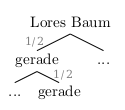
Während in obigem Baum die Abzweigungen noch skizziert sind, könnte Lore sogar diese weggelassen haben. Dann hat sie tatsächlich nur einen Pfad.
3.3.2 Wahrscheinlichkeit des Gegenereignisses

Mara die den bewährten Glücksradstand auf dem nächsten Straßenfest ausrichten soll, fragt sich, mit welcher Wahrscheinlichkeit man an ihrem Stand keinen Blumentopf gewinnt, um abschätzen zu können, wie viele Blumentöpfe sie vorsorglich dabei haben sollte.
Die Regeln sind wie jedes Jahr unverändert: Es wird zweimal hintereinander gedreht, wer zweimal eine 10 hat, hat gewonnen.
Natürlich könnte Mara nun beginnen ein Baumdiagramm mit 10 Pfaden (für die Zahlen von 1 bis 10) pro Stufe zu zeichnen. Dann müsste sie die Wahrscheinlichkeiten aller Pfade, in denen eine oder keine 10 vorkommt, ermitteln und diese Wahrscheinlichkeiten anschließend noch addieren. Das ist viel Arbeit und Mara ist (manchmal ein bisschen) faul.
Stattdessen überlegt sie sich, dass sie die Aufgabe mit Hilfe des Gegenereignisses lösen könnte.
Das Gegenereignis tritt genau dann ein, wenn das Ereignis nicht eintritt. Es besteht aus genau den zusammengesetzten Ergebnissen, die nicht zum Ereignis gehören.
Das Gegenereignis zu eine 6 würfeln ist also keine 6 - also eine 1, 2, 3, 4 oder 5 würfeln.
Das Gegenereignis zu Zahl werfen ist beim Münzwurf keine Zahl und damit Kopf werfen. Wirft man die Münze fünfmal, so ist das Gegenereignis zu fünfmal Zahl werfen in mindestens einem der fünf Würfe Kopf werfen (also einmal Kopf und viermal Zahl, zweimal Kopf und dreimal Zahl, viermal Kopf und einmal Zahl oder fünfmal Kopf)
Das Gegenereignis von keinmal oder nur einmal 10 beim Glücksrad (kein Blumentopf) ist zweimal 10 (Blumentopf).
Beachte:
Für ein Ereignis \(E\) und seine Gegenereignis \(\bar{E}\) gilt: \(P(E)+P(\bar{E})=1 (100\%)\).
Mit anderen Worten: Die Wahrscheinlichkeiten eines Ereignisses und des zugehörigen Gegenereignisses ergänzen sich zu 100%.
Die Wahrscheinlichkeit von Ereignissen mit sehr vielen Ergebnissen kann man oft schneller ermitteln, wenn man die Wahrscheinlichkeit des Gegenereignisses bestimmt.
Mara fragt also einfach Samuel, wie hoch denn die Wahrscheinlichkeit ist, einen Blumentopf zu gewinnen (Gegenereignis) und rechnet dann:
\[\begin{align} P(keinen\;Blumentopf\;gewinnen) &= 1- P(einen\;Blumentopf\;gewinnen) =\\ &= 1 - \frac{1}{100} = \frac{99}{100} = 99\% \end{align}\]
Beispiel
Ermittle die Wahrscheinlichkeit, bei dreimaligem Würfeln mindestens eine 6 zu erhalten.
Das Gegenereignis zu mindestens eine 6 ist keine 6 bei dreimaligem Würfeln. Zeichne für diesen Fall ein verkürztes Baumdiagramm und bestimme dann die Wahrscheinlichkeit des Gegenereignisses:
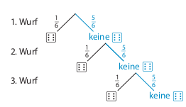
\(P(dreimal\;keine\;6)= \frac{5}{6}\cdot\frac{5}{6}\cdot\frac{5}{6} = \frac{125}{216} \approx 58\%\)
Da die Summe der Wahrscheinlichkeiten von Ereignis und Gegenereignis 1 (100%) ist, kann man nun die gesuchte Wahrscheinlichkeit berechnen:
\(P(mindestens\;eine\;6)= 1 - P(dreimal\;keine\;6) = 1- \frac{125}{216} = \frac{91}{216} \approx 42\%\)
Aufgabe 1
Gib das Gegenereignis in Worten an.
- Beim Werfen eines Spielwürfels erhält man eine gerade Augenzahl.
Beim Werfen eines Spielwürfels erhät man eine ungerade Augenzahl (keine gerade Augenzahl).
- Ein Würfel wird dreimal geworfen. Es fällt mindestens zweimal eine gerade Augenzahl.
Ein Würfel wird dreimal geworfen. Es fällt höchstens einmal eine gerade Augenzahl.
- Eine zufällig ausgewählte natürliche Zahl zwischen 1 und 49 ist kleiner als 20.
Eine zufällig ausgewählte natürliche Zahl zwischen 1 und 49 ist größer oder gleich 20.
- Aus einem Beutel mit acht verschiedenfarbigen Kugeln wird eine gelbe Kugel gezogen.
Aus einem Beutel mit acht verschiedenfarbigen Kugeln wird eine Kugel gezogen, die nicht die Farbe gelb hat.
- Aus einem Beutel mit acht farbigen Kugeln werden zwei Kugeln entnommen. Beide Kugeln sind gelb.
Aus einem Beutel mit acht farbigen Kugeln werden zwei Kugeln entnommen. Höchstens eine der beiden Kugeln ist gelb.
- Bei der zufälligen Auswahl zweier Schüler:innen einer achten Klasse werden ein Mädchen und ein Junge gewählt.
Bei der zufälligen Auswahl zweier Schüler:innen einer achten Klasse werden entweder zwei Mädchen oder zwei Jungen gewählt (wird ein gleichgeschlechtliches Paar gewält).
- Eine Münze wird zehnmal geworfen, es fällt höchstens sechsmal Wappen.
Eine Münze wird zehnmal geworfen. Es fällt mindestens siebenmal Wappen.
- Beim Ziehen von acht Losen erhält man mindestens fünf Gewinne.
Beim Ziehen von acht Losen erhält man höchstens vier Gewinne.
- Ein Würfel wird fünfmal geworfen. Es fällt genau zweimal eine Sechs.
Ein Würfel wird fünfmal geworfen. Es fallen keine, eine oder mindestens drei Sechsen.
Aufgabe 2
Leos Fussballtrainer sagt, dass die Mannschaft jedes Spiel mit einer Wahrscheinlichkeit von 70% gewinnt. Zwei Spiele vor Schluss der Saison ist klar, dass die Mannschaft noch mindestens eins gewinnen muss, um Meister zu werden.
- Stelle die Situation in einem Baumdiagramm dar. Markiere die Pfade für das Ereignis “die Mannschaft gewinnt noch mindestens ein Spiel” und sein Gegenereignis mit unterschiedlichen Farben. Gib das Gegenereignis in Worten an.
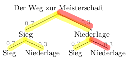
Das Gegenereignis zu “die Mannschaft gewinnt noch mindestens ein Spiel” ist “die Mannschaft gewinnt kein Spiel” (genauso kann man natürlich auch sagen: “die Mannschaft verliert beide Spiele”).
- Berechne die Wahrscheinlichkeit, dass die Mannschaft noch mindestens ein Spiel gewinnt.
1. (etwas längerer) Weg:
Man kann die Wahrscheinlichkeit entweder als Summe der Pfade, die zum Ereignis gehören berechnen:
\[\begin{align} P(Mannschaft\;gewinnt\;mindestens\;ein\;Spiel)&= 0,7\cdot0,7 + 0,7\cdot0,3 + 0,3\cdot0,7 = \\ &= 0,91 =91\%\end{align}\]
\({}\\\)
2. (kürzerer) Weg:
Oder man berechnet die Wahrscheinlichkeit, indem man die Wahrscheinlichkeit des Gegenereignisses ermittelt und ausnutzt, dass \(P(Ereignis)+P(Gegenereignis)=1\) gilt:
\(P(Mannschaft\;gewinnt\;mindestens\;ein\;Spiel)= 1-0.3*0.3 = 1-0.09=0.91=91\%\)
Aufgabe 3
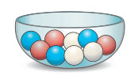
In einer Schale liegen drei rote, drei blaue und drei weiße Kugeln. Viky zieht drei Kugeln ohne Zurücklegen. Berechne die Wahrscheinlichkeit dafür, dass sie
- drei rote Kugeln,
Hier ist nur ein Pfad interessant:
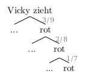
\(P(drei\;rote\;Kugeln) = \frac{3}{9} \cdot \frac{2}{8} \cdot \frac{1}{7} = \frac{1}{84} \approx 1,2\%\)
- keine rote Kugel,
Fast man die weißen und blauen Kugeln zu nicht roten Kugeln zusammen, ist auch hier nur ein Pfad interessant:
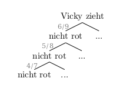
\(P(keine\;rote\;Kugel) = \frac{6}{9} \cdot \frac{5}{8} \cdot \frac{4}{7} = \frac{5}{21} \approx 23,8\%\)
- mindestens eine rote Kugel
zieht.
Mindestens eine rote Kugel ziehen ist das Gegenereignis zu keine rote Kugel ziehen. Daher kann man sich die Aufgabe sehr einfach machen und das Ergebnis aus Teilaufgabe b verwenden. Damit gilt:
\[\begin{align} P(mindestens\;eine\;rote\;Kugel) &= 1 - P(keine\;rote\;Kugel) =\\ &= 1 - \frac{5}{21} = \frac{16}{21} \approx 76,2\% \end{align}\]
Aufgabe 4
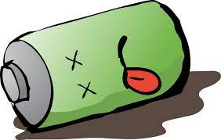
Bei der Produktion von Handyakkus sind durchschnittlich 2% defekt. In einer Packung werden vier Akkus geliefert. Berechne die Wahrscheinlichkeit, dass in der Packung mindestens ein defekter Akku ist.
Hier kann man sich die Aufgabe wieder vereinfachen, indem man die Gegenwahrscheinlichkeit berechnet. Das Gegenereignis zu mindestens ein Akku ist defekt ist kein Akku ist defekt. Damit muss man nur einen Pfad beachten:
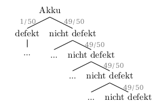
\[\begin{align} P(mindestens\;ein\;Akku\;ist\;defekt) &= 1 - P(kein\;Akku\;ist\;defekt) = \\ &= 1 - (\frac{49}{50})^4 \approx 0,0776 \; (\approx 7,76\%) \end{align}\]